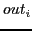
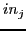
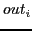
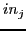
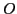
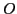

Next: PeMM Characterization
Up: Probabilistic Error Masking Matrix
Previous: Probabilistic Error Masking Matrix
Consider a circuit with
inputs and
outputs. We label the n inputs as
and the m outputs as
. The PeMM  of the circuit is a matrix with dimension
. Each entry in
represents error masking probability
of the circuit is a matrix with dimension
. Each entry in
represents error masking probability
 , where
and
. It shows the error masking effect on output 
with regard to input 
, where 0
means the error has been completely masked while
implies no masking effect at all. Note that
so that value larger than 1 will be truncated. The inputs of the circuits are represented by a column vector
, where
and
. It shows the error masking effect on output 
with regard to input 
, where 0
means the error has been completely masked while
implies no masking effect at all. Note that
so that value larger than 1 will be truncated. The inputs of the circuits are represented by a column vector  with dimension
. Entry in
represents the error probability
associated with input
. When the input vector is left multiplied with
, resultant output vector is represented by a column vector 
with dimension
, whose entry shows the error probability
with dimension
. Entry in
represents the error probability
associated with input
. When the input vector is left multiplied with
, resultant output vector is represented by a column vector 
with dimension
, whose entry shows the error probability  associated with output of circuits. Figure 1 visualizes the abstract circuit model with its PeMM.
associated with output of circuits. Figure 1 visualizes the abstract circuit model with its PeMM.
Figure 1:
Probabilistic error Masking Matrix
|
|
Compared to PTM which is intended for modeling entire circuit, PeMMs can also represent error masking effects of individual micro-architecture units. Such divide and conquer approach considers the circuit PeMM as the concatenation of PeMMs for architecture units. Figure 2 shows the architecture units for executing the ALU instructions and data signals between logic operations. The dimensions of selected PeMMs are shown based on the counts of input and output signals. In case that input faults are not completely masked, the unit outputs errors with certain probability.
Figure 2:
Logic blocks involved for ALU instruction
|
|
Next: PeMM Characterization
Up: Probabilistic Error Masking Matrix
Previous: Probabilistic Error Masking Matrix
Zheng Wang A Chattopadhyay
2014-07-16